◾️Lv900以上で受託可能
◾️経験値約622億 ◾️目安15分
◾️経験値約622億 ◾️目安15分
1. 妹の行方
| 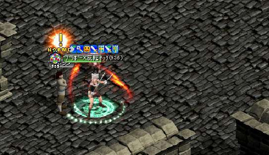 |
ガイド901~の狩場/捨てられた地下墓地B1で飛ぶ。 飛んだ所のすぐ左【173.183】にアレックがいるので話しかける。 飛んだ所のすぐ左【173.183】にアレックがいるので話しかける。 |
|---|---|
| 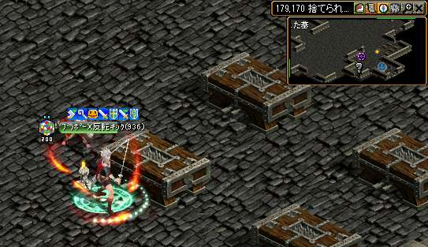 |
オブジェクトを４ヶ所触っていきます。 墓【180.170】 墓【180.170】 |
| 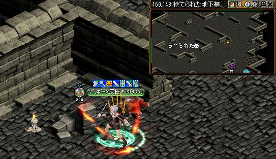 |
ブロック 【169.143】 |
| 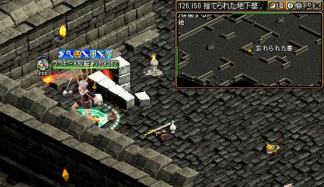 |
ブロック 【126.150】 |
| 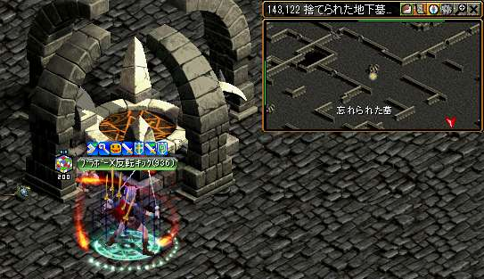 |
ごつい魔法陣【143.122】 触り終えたら、アレックのところへ戻る。 この魔法陣の前を記憶２ この魔法陣の前を記憶２ |
| 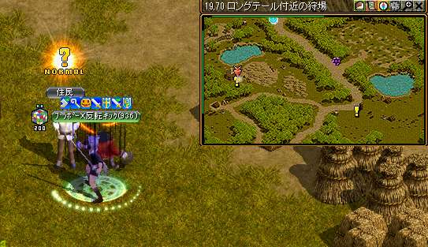 |
経験値が貰えるのでパワキを準備しよう！ ロングテール付近の狩場/住民【16.69】と話す 経験値が貰える！ 住民の前を記憶１ |
2. 惑わされた街
| 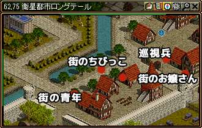 |
951〜クエスト/忘れられた場所に存在するのはで飛ぶ。 街のお嬢さん 巡視兵 街のちびっこ 街の青年 の順番で話す。 |
|---|---|
| 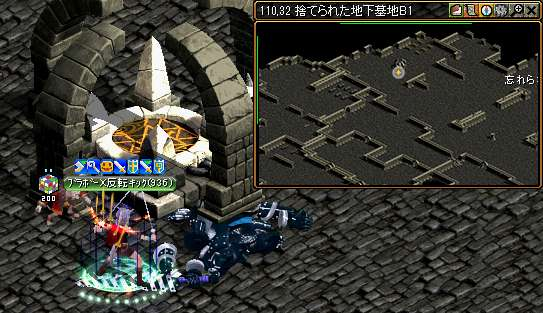 |
記憶２で墓地へ 魔法陣を触ってＵＰ。 |
 |
街移動で魔法スマグへ 【29.29】にいる、イラリアと話してＵＰ 経験値が貰える！ |
3.オーラ探知機の制作
| 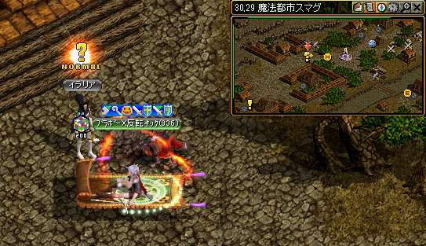 |
もう一度イラリアと話してＵＰ。 会話後「地下墓地」フィールドに飛ばされる 会話後「地下墓地」フィールドに飛ばされる
|
|---|---|
| 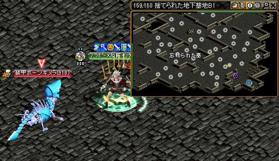 |
捨てられた地下墓地B1 / 装甲ボーンキメラ キメラの心核を集める。 ミラーでもアップします！ |
| 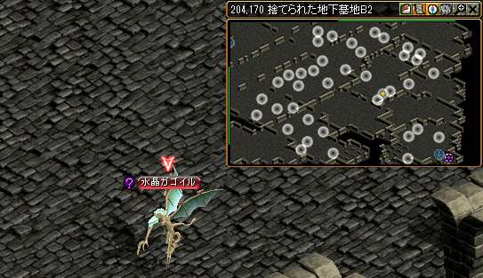 |
捨てられた地下墓地B2 / 水晶ガゴイル 集め終わったら、イラリアと話してＵＰ。。 経験値が貰える！ |
4.オーラ探知機の制作
|
記憶２で墓地へ |
|
| 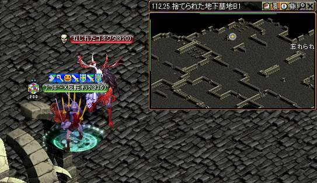 |
もうひとつの魔法陣(110.32)へ走る マップの中央一番上方面にある魔法陣をクリック 違う魔法陣なので注意！ 魔法陣をクリックする【ねじれたコネクタ】が沸くので倒してUP。 #とてもつよい #金鯖だと復活たくさん使う |
| 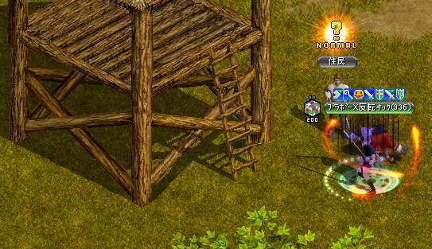 |
記憶１で住民の前へ 住民と話してＵＰ |
| 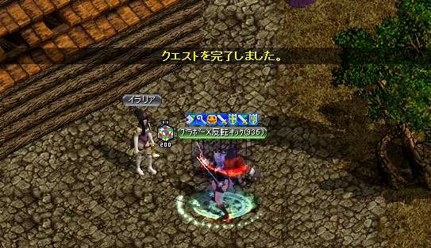 |
街移動で魔法スマグへ イラリアと話してクエ終了 経験値が貰える！ |